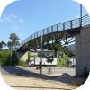
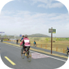
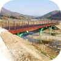

오늘 어디로
달릴까요?
행정안전부가 함께합니다
검색결과 총 12개
-

대전 중구 보문산 자전거길
문산입구→청년의 광장→사정공원→대전오월드→뿌리공원
왕복 2시간 소요
주행거리 10km(시속 15Km 기준)
-

대전 동구 대청호수로 자전거길
대청호반 자연생태공원→대청호 자연생태관→국화꽃단지→ 전망좋은곳
왕복 1시간 30분 소요
주행거리 5.8Km(시속 15Km 기준)
-

대전 대덕 신탄진 금강변 자전거길
신탄진역→현도교→대청대교→레포츠센터→미호교→대청공원
왕복 1시간 소요
주행거리 7km(시속 15Km 기준)
-
대전 대덕 신탄진 금강변 자전거길
신탄진역→현도교→대청대교→레포츠센터→미호교→대청공원
왕복 1시간 소요
주행거리 7km(시속 15Km 기준)
검색결과가 없습니다